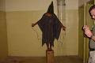

"America's Sheriff," Mike Carona, poses with America's Feliks Dzerzhinsky -- Tom Ridge, founder of our Cheka, the Department of Homeland Security.
Several decades ago, Latvian filmmaker Albert Jekste produced a documentary entitled “My Latvia” depicting the Soviet conquest and occupation of the Baltic States. The most memorable sequence in that film presented, in deadpan, roll-call style, a roster of Soviet-appointed civic officials and their previous occupations.
Without exception, each had been a career criminal, generally in the same field as his new “legitimate” profession: The new head of the central bank had been an armed robber, the police chief had been the local underworld boss, and so on.
A similar amalgamation of the criminal underworld and political “over-world” is taking place as America descends into an abyss of Soviet-style corruption and tyranny in the name of Homeland Security. But we have to take note of a very important distinction: We're doing it to ourselves.
As occasion warrants, I'll present case studies illustrating what we could call the “My Latvia Syndrome.” I suspect that we'll suffer from a crisis of abundance rather than one of scarcity in this respect.
Today's example focuses on Mike Carona, a self-professed Christian Republican from Orange County – the Mecca of modern conservatism – who has been designated “America's Sheriff” by Larry King. (Here is a gallery of photos, letters, and other keepsakes from King and other celebrities from the "I Love Me" page of Carona's re-election campaign website.)
A balding man in his early 50s with a swimmer's build and the earnest, buck-toothed demeanor of the world's oldest Boy Scout, Carona is a key homeland security adviser to George W. Bush and California Governor Schwarzenegger. He is also a serial adulterer (click here and scroll down to see a photo of Carona during a Russian junket cradling his, ahem, interpreter, who is depicted in another photo wearing the Sheriff's uniform). To this can be added the fact that he's a bosom chum of at least one significant Mafia figure.

The official certificate naming Carona a "senior adviser" on homeland security affairs.
Several years ago Carona filled his campaign war chest was filled with illegal contributions from a felonious businessman as part of a kickback scheme involving a proposed system called High-speed Avoidance Laser Technology (HALT), which could be used by police to disable automobiles by remote control.
HALT is described in the patent (number 6411217) as “a remotely operable vehicle disabling system where a remote command transmitter transmits a command to a receiver capable of terminating vehicle operation and situated within a vehicle to be so disabled.... The system comprises, first of all, a remotely operable transmit unit for transmitting a command shutdown message which may preferably be an infrared beam. Second, the system comprises a command-receiver vehicle unit capable of responding to the command and physically situated at a site of the vehicle such that a shutdown message from the transmit unit can reach the vehicle unit.”
HALT was to be produced by CHG Safety Technologies, whose founder and CEO, Charles H. Gabbard, had applied to become a California police officer in the late 1950s. After being found unsuitable for such service, Gabbard embarked on a career on the other side of the law, building a criminal resume that included armed robbery, attempted robbery, embezzlement, sundry parole violations, and a murder charge.
In 2000, after “going straight,” Gabbard met Sheriff Carona (who was a little more than a year into his first term) by way of a mutual friend: Lobbyist Bob Levy, a retired U.S. Marshal hard-wired into California's vast network of law enforcement unions and pressure groups.

Gabbard enlisted Levy, Carona, and other influential figures in a scheme to give HALT a monopoly by having the legislature mandate its installation in all automobiles state-wide. The felon-turned-police state profiteer handed out tens of thousands of dollars in bribes (in the form of illegal campaign donations) to then-Governor Gray Davis and various state legislators. His most generous gifts were bestowed on Sheriff Carona.
In February 2000, Carona, Levy, and Gabbard worked out an arrangement through which the Sheriff would promote Gabbard's technology in exchange for campaign cash. In fulfillment of his end of the deal, Carona “spent untold thousands of taxpayer dollars to hold a HALT demonstration at El Toro [a former Marine Corps base] on March 16, 2000, and six days later sent a glowing product-endorsement letter to state officials considering a plan, Senate Bill 2004, to mandate Gabbard's products on all California vehicles,” reported the Orange County Weekly (which has produced Pulitzer-caliber exposes of the myriad law enforcement scandals afflicting that community).
Even more shocking was Carona's offer to provide “certain inmates” at the County Jail to help Gabbard manufacture his product.
On May 18 of that year Gabbard came through with the quo for the Sheriff's quid, in the form of $40,000 in donations from CHG executives during a “birthday party” for Carona at Villa Nova restaurant in Newport Beach.
When the dirty deal became public knowledge, Carona reacted by blaming the entire affair on his second-hand man, Assistant Sheriff George Jaramillo.
Both Jaramillo and his wife received tens of thousands of dollars in “consulting fees” from Gabbard to promote the HALT technology. On January 30 Jaramillo was given a year in jail and three years of probation as part of a plea agreement. He had faced the prospect of 13 years in prison on bribery, misuse of county property, and lying to a grand jury.
Carona insists that he was deceived by Jaramillo, a one-time close friend whom he was grooming as a successor. ("He is not only like a brother to me, he is my brother," Carona once insisted.) But there is a solid evidentiary trail connecting Carona himself to the kickback scheme, and besides, as Sheriff he should bear much of the blame for a scandal involving his second-in-command.
But Carona – or “Calamity Mike,” as the OC Weekly refers to him – appears to be immune to accountability in any form.
*A few years ago, “America's Sheriff” was photographed (wearing his uniform) in a boozy embrace with Rick Rizzolo, a Las Vegas “adult entertainment” mogul who has been identified by the FBI as a Mob associate.
*In September 2003, Carona issued a memo granting Joseph M. Medawar, a con man-cum-filmmaker, access to Orange County's Emergency Operations Center (EOC), a high-tech crisis headquarters center intended for use in the event of a natural disaster or a terrorist attack. The EOC hosts classified training exercises involving most federal and state law enforcement and emergency response agencies.
The Lebanese-born Medawar, who has close ties to Saudi Arabia, claimed that he was filming a pilot for a television series to be called DHS, which would “celebrate federal agents and President Bush.” (He had paid Orange County Congressman Dana Rohrabacher $23,000 for an old script.) A federal indictment described Medawar's enterprise as a scam that defrauded investors of more than $5.5 million.

Thumbs up for evil! Carona poses with demented GOP presidential aspirant John McCain (left), and with McCain's rival Mitt Romney (right).

It's tempting to perceive Carona as a reality-based version of Chief Wiggum, the spectacularly corrupt and heroically inept Police Chief from The Simpsons. As Greg Hall can testify, Carona is more commissar than clown.

Hall, a 40-year-old businessman, was involved in a fender-bender on July 17, 2005. Upon their arrival the police gave him two Breathalyzer tests, both of which revealed a blood alcohol level of 0.00. Hall was cooperative, telling the officer that he had consumed a single beer and was taking Paxil, a prescription antidepressant. For no particular reason, Hall was arrested on suspicion of DUI and taken to the Orange County Jail.
Following a drug test, Hall was left to stew for what he was told would be no longer than an hour. When a group of Carona's deputies appeared on the scene, Hall politely complained that his handcuffs were too tight.
This mild complaint provoked the knot of deputies – a five-man gang referred to in Carona's department as the “Psycho Crew” -- to treat Hall “like a pinata.”
The handcuffed businessman, who had done nothing wrong and wasn't suspected of a violent offense, was subjected to a three-minute beating. He was dragged down a corridor, had his face repeatedly shoved into cell bars and slammed into the concrete floor, and received countless punches and kicks to his ribs.
Hall was left with “a concussion, broken ribs, a gash in his leg, an eye contusion, broken veins in his feet, a shattered front tooth, lacerations and bruises over his body, contusions to the knee, neck pain, a fractured right wrist and nerve damage to his left hand,” recounts OC Weekly, citing medical records. “The handcuffs were locked so tightly that the steel sliced his hands and caused dangerous swelling. An imprint of a deputy's boot could be seen on the back of his leg for days.”
The intensity of the assault made the terrified businessman lose control of his bowels, causing him to evacuate in his pants; his assailants, taking sadistic glee in their handiwork, derisive calling their victim a “sh*t monkey,” and left him in a cell to bleed. Some of them returned later to tie a black mesh hood over his head – a fitting coda to a performance straight out of Abu Ghraib.


Hall was left bleeding, with his hands cuffed behind his back, sitting in his own feces, for more than twelve hours. Deputies denied him food and water or access to a telephone. Eventually his leg wound was stitched up – without anesthetic – and he was permitted to stagger out of the jail without apology or explanation for the treatment he'd received.
This isn't the first time Carona's goon squad has tortured a jail inmate. In December 1999, four deputies assaulted a 20-year-old inmate in an isolated corner of the facility, torturing him by crushing his testicles. Prosecutors conceded that the torture had occurred, but insisted that they were stymied by a “code of silence” within the Sheriff's Department.
A class-action lawsuit brought against Carona's department was dismissed in April 2005 by now-retired federal judge Gary L. Taylor, who was appointed by the George Bush (the elder). Taylor stipulated to the abuses, and acknowledged that there was “room for improvement” -- and then offered the written equivalent of a shrug by saying that “the county and the sheriff show every indication they will perform that high duty.”
Sheriff Carona, predictably, described Taylor's ruling as a “great victory.”
Just a few weeks later, his deputies, entrusted with the “high duty” to maintain professional standards of inmate safety literally beat the sh*t out of an innocent businessman, just because they could.
For maintaining standards of conduct worthy of a Soviet satrap, Mike Carona, “America's Sheriff” and senior national security adviser to George W. Bush, has earned the distinction of being the first figure profiled in our “My Amerika” series.
For news and commentary from a freedom-focused perspective -- as well as Kevin Shannon's no-holds-barred radio program -- please visit The Right Source.
5 comments:
Mr. Grigg,
As a resident of beautiful Orange County currently transplanted in New York while I finish up my education, I take umbrage at your characterization of one of our "hometown heroes!"
Wait... no I don't.
I can't claim I have studied and paid attention to the apparently widespread corruption amongst Orange Country/Newport Beach police organizations (I think I was too young to notice/care when most of this stuff was going down) but I certainly do have memories of gross incompetence on the part of our law enforcement officials.
I think the best example of this was an "incident" that took place about 2/5 of a mile down my street from my house.
A disgruntled local handyman held the resident of the home and her caretaker hostage, beat them with the blunt end of an axe and then lit the house on fire, attempting to roast them alive inside. A passerby familiar with the resident noticed trouble through the front window of the house and called police.
The two women were rescued, but by the time the authorities had shown up, the house was engulfed in flames and the assailant had fled the scene... not via the streets on foot or in a car, but rather down the sheer cliff face which the house was perched over and then swimmingly through the "Back Bay" aquatic wildlife preserve/turgid, stale, polluted backwater marsh habitat below.
All this despite the presence of a police helicopter (the ol' "ghetto bird" that patrols our skies morning, noon and night, to the point that its flyovers occur more frequently than those of the 757 airliners traversing the flight path above my house... oh yeah, did I mention we live underneath the main takeoff/landing route of all air traffic at Orange County's John Wayne Airport?), harbor patrol, 2 K-9/detective teams, innumerable other uniformed officers and, last but not least, NBPD's very own SWAT team?
The home ended up collapsing after the fire was finally tended to by the firefighters who refused to fight the fire when they first arrived, claiming they had been shot at by the suspect (no such thing had actually occurred) and which I assume was what prompted the SWAT team showing up.
As I later found out, the only reason the man was tracked down after managing to elude a veritable army of law enforcement officials at the outset was because he had carelessly lost his wallet in the thicket of brush at the base of the cliff, and had even more carelessly left a receipt to the local motel he was staying at in same wallet. Police waited for him to show up, which he did (probably to take a shower and relax in front of the TV after a hard days work of tying people up and burning their house down around them), at which point they finally proved competent enough to nab him.
I think the best part of it all, however, was the announcement that came on over my local high school's loudspeaker system after students started noticing the Baghdad/Mogadishu-like cloud of thick black smoke emanating from the deeper inside the neighborhood and began to worry-- "There has been a terrorist incident in Dover Shores [my neighborhood] and the police have sealed off the neighborhood [quite poorly, I'd imagine, since the suspect managed to escape!]. No one is allowed in or out of Dover Shores at this time. If you live in Dover Shores, please do not attempt to return there at this time." All prompted by the authorities involved, I am sure.
A beautiful mansion on the corner of my street was at one time inhabited by a man, who has since gone to prison, who embezzled millions of dollars from the local NMUSD school district. Really classy stuff.
Check out our crime statistics! Really deplorable spate of rapes on the peninsula, and of course my neighborhood has always been ripe for a burglary or two... one year, in a space of about a month, three different women were burglarized in their own garages after returning home, in broad daylight. You'd think the police would step it up with a few more patrols after the first crime went unsolved, but nah.
Probably too busy giving tickets to children who weren't wearing their bicycle helmets as they rode away from school. NBPD has always been pretty good at that. When I was about 10, I just about had a heart attack after a motorcycle officer lurking behind a hedge-rowed corner WOOOOOOOOO-ed me with his siren to get my attention after I "ran a stop sign" on my bicycle on the way to the local elementary school. It was 8:30 in the morning, it was freezing (relatively for an OC-winter) outside and having been forced to ride to school for the past three years of my life I knew the terrain well enough to know the streets weren't going to have any traffic at that time of day.
Still, the wise civil servant thought it better I be late to class that morning so I could get a stern "warning" about the recklessness of my actions. Next time, it would be a ticket!
I don't hate the cops, and I know most of them are good people doing their job (which a lot of the time can be quite dangerous for them), but that doesn't mean they should get off the hook anytime they screw up, either.
Oh, and there's also the fact (which I am sure is a problem/exists in many other communities as well) that most of the NBPD force aren't actually residents of the community, so you get that whole "occupying army," "screw you buddy I don't have to treat you nicely because I'll never run into you at our kids' soccer games" dynamic too.
Holy Cow Batman!
I lived in Orange up until 1973. At that time I had pretty fond memories but lord almighty it sure sounds like another corrupt snake pit.
Holy Cow Batman!
I lived in Orange up until 1973. At that time I had pretty fond memories but lord almighty it sure sounds like another corrupt snake pit.
This is the epitome of extreme; yet this thug and his thuggets, when not flingin' some hapless person around about a jail cell that is, are still being paid to eat donuts and pretend to play the Andy Griffith skit at the expense of OC taxpayers???
Amazing, Will. So, even with some media exposure as you described, am I to assume there's been no mass citizen outrage? If there hasn't been a roaring outrage expressed by the commoners* to protest this kind of savagefest, orchestrated by mere county mounties to boot, then I have little sympathy.
Perhaps, those folk are so enthralled with living close to richie celebs that they think they'll get the same kind of kiddie glove treatment as well, come an encounter with state's men. They forget that only Hollyweird's own are handled with kiddie gloves in encounters with the "boyz in blue."
* I hate using that term for those who reside in a place like OC. The majority of the populace in that locale can hardly be classified as "commoners," as one would even liberally define the term.
Dixie, when my parents, sister and I lived in Orange and Anaheim (late sixties to early seventies) we lived in apartments, and judging from my dads pay stubs that I stumbled upon recently I was surprised we survived at all. Poor would be an apt description. I never knew it but we weren't well off even though we lived in what is today a very expensive enclave.
And its easy to not pay attention when you're slaving to merely live day to day. Even in the town I presently live in I can see that because people are too burdened with merely making a "living" that they haven't the desire, nor time, to sit on every crooked official. There are plenty of them but I suspect its all by design.
This is one more reason to flee the large metro areas and head for the hills.
Post a Comment